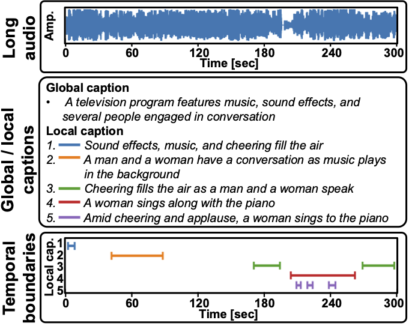

Hokuto Munakata1, Takehiro Imamura2, Taichi Nishimura1, Tatsuya Komatsu1
1LY Corporation, Japan
2Nagoya University, Japan
[Paper]
[Annotation data]
[Audio data]
[CLAP Features (Zenodo)]
[CLAP Features (HuggingFace)]
This repository provides a new dataset that includes long audio, captions of local audio events, and temporal boundaries. Please also check demo page

Annotation data and audio data are available at GitHub - line/castella and GitHub - h-munakata/CASTELLA-audio. For audio moment retrieval, we provide the recipe of audio moment retrieval using CASTELLA dataset on GitHub - line/lighthouse. The extracted CLAP feature for this recipe and the procedure to setup is available at Zenodo or HuggingFace.
Here are some examples from the CASTELLA dataset.
A television program features music, sound effects, and several people engaged in conversation
A man works with wood and machinery while talking
Someone is cooking with a metal pot or frying pan on a gas stove using water
@article{munakata2025castella,
title={CASTELLA: Long Audio Dataset with Captions and Temporal Boundaries},
author={Munakata, Hokuto and Takehiro, Imamura and Nishimura, Taichi and Komatsu, Tatsuya},
journal={arXiv preprint arXiv:2511.15131},
year={2025},
}